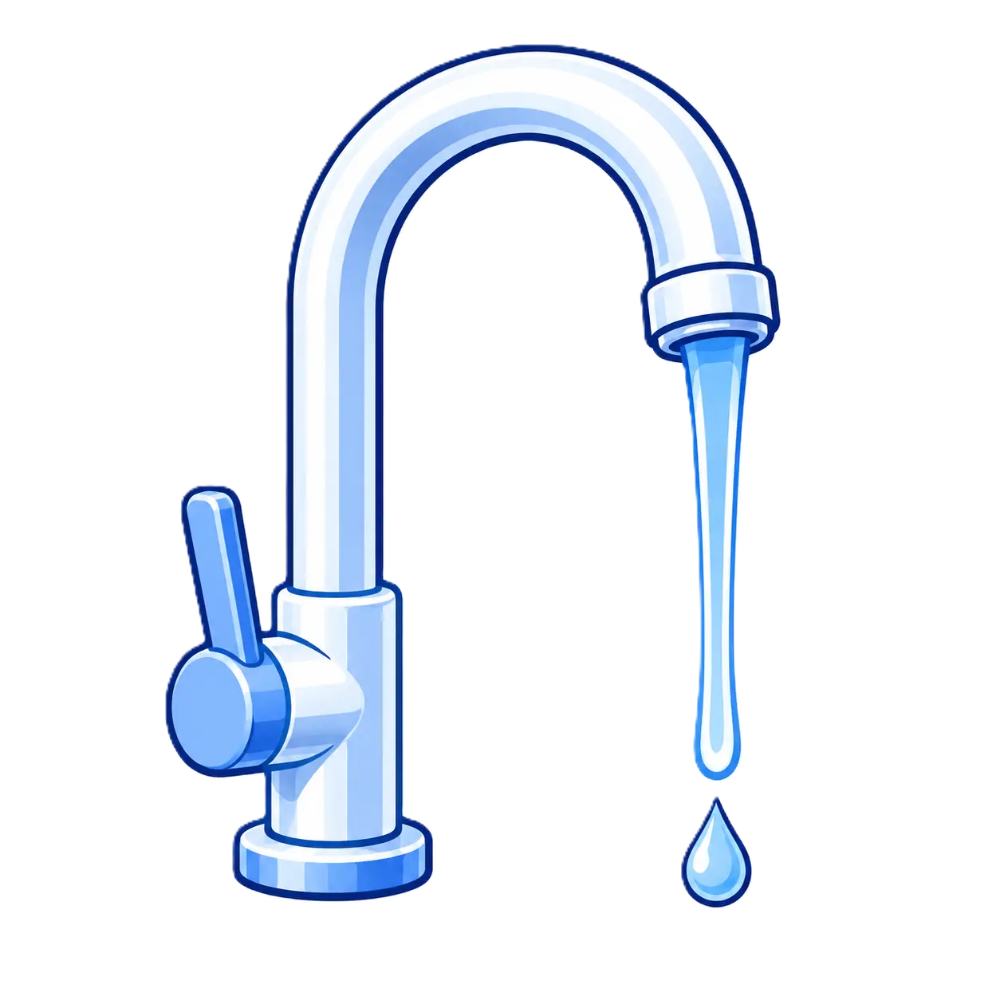
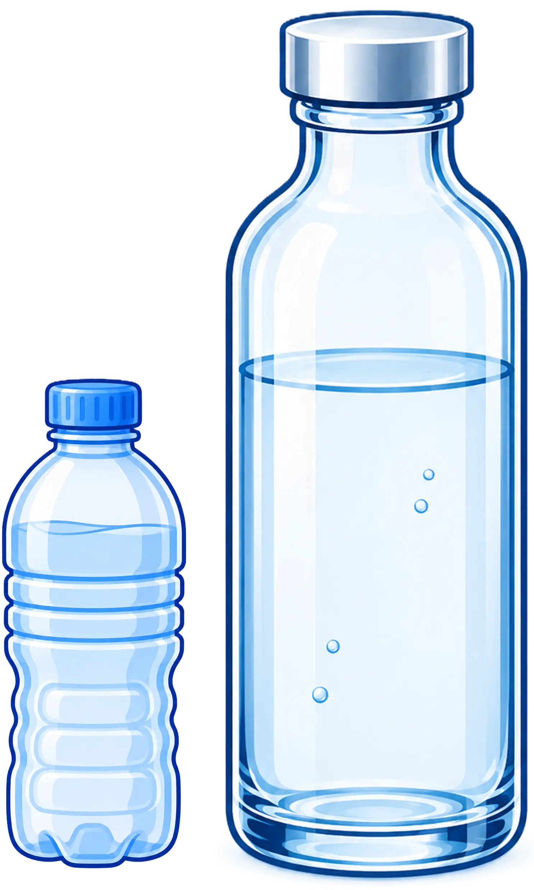

Resultats de tots els participants
Nombre de participants anteriors = {{participacions.length}}
Distingim bé les aigües?
| Encerts | Participants |
|---|---|
| {{key}}/4 | {{val}} ({{(100*val/participacions.length).toFixed(0)}}%) |

{{
get_encerts_participacions_anteriors.tipus_aigua.Aixeta||0
}}
de
{{
participacions.length
}}
({{((get_encerts_participacions_anteriors.tipus_aigua.Aixeta||0)/participacions.length).toFixed(2)}} %)
han encertat
l'aigua de l'aixeta

{{
get_encerts_participacions_anteriors.tipus_aigua.Embotellada||0
}}
de
{{
participacions.length
}}
({{((get_encerts_participacions_anteriors.tipus_aigua.Embotellada||0)/participacions.length).toFixed(2)}} %)
han encertat
l'aigua embotellada
Quina aigua ens agrada més?
| Tipus aigua | Participants |
|---|---|
| {{key}} | {{val}} ({{(100*val/participacions.length).toFixed(0)}}%) |
{{get_aigua_preferida_de_tothom.text}}